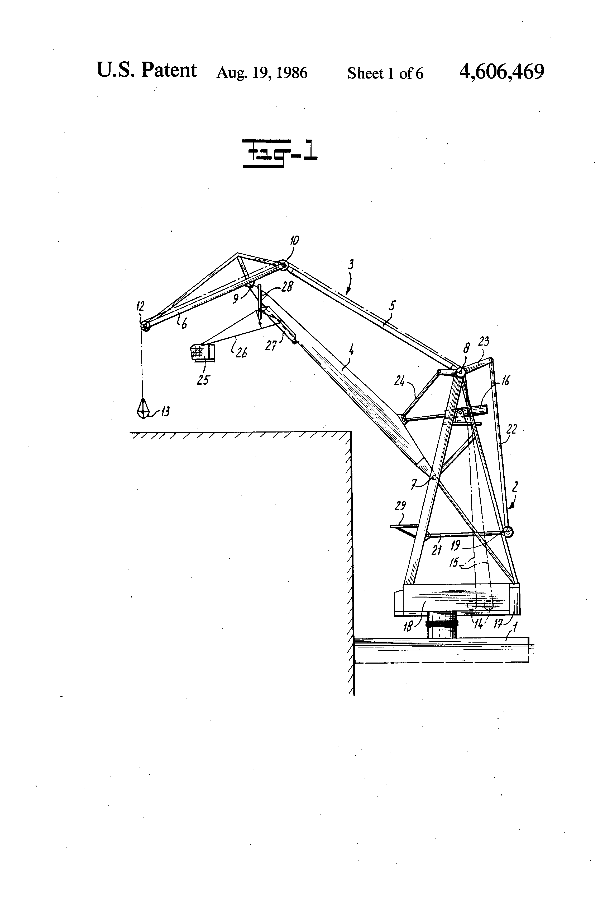
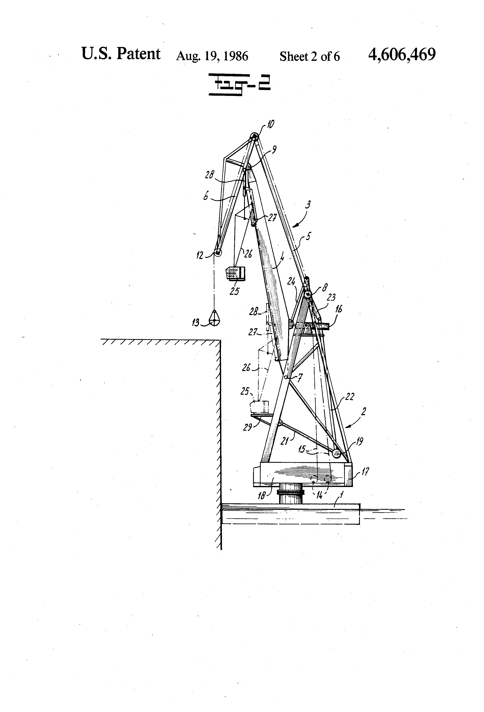

Further research on level luffing cranes
Existing patented designs

Schematic illustrations from patent no. US4606469, p.1

Schematic illustrations from patent no. US4606469, p. 2
After looking at different variations of the base horse head jib crane, I came upon different patents which
utilize the same base mechanism.
- https://web.archive.org/web/20110929212832/http://vads.ahds.ac.uk/diad/article.php?title=233&year=1968&article=d.233.47
- https://web.archive.org/web/20121011232706/http://www.btinternet.com/~a.esplen/models/pic12.htm
- https://worldwide.espacenet.com/patent/search/family/025341233/publication/US3685668A?q=pn%3DUS3685668
- https://www.rmweb.co.uk/community/index.php?/topic/105106-the-toplis-level-luffing-crane-a-mathematical-quandary/